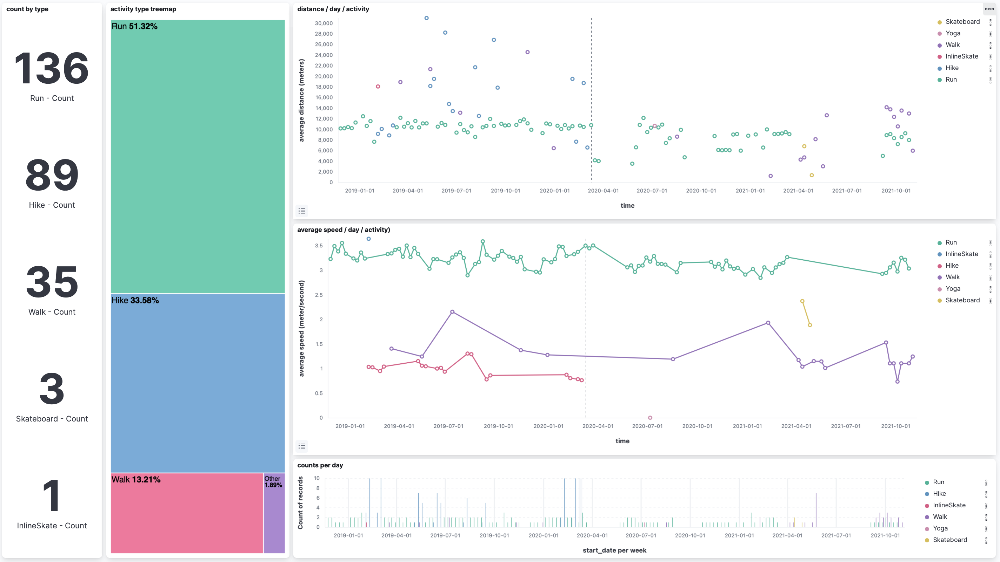
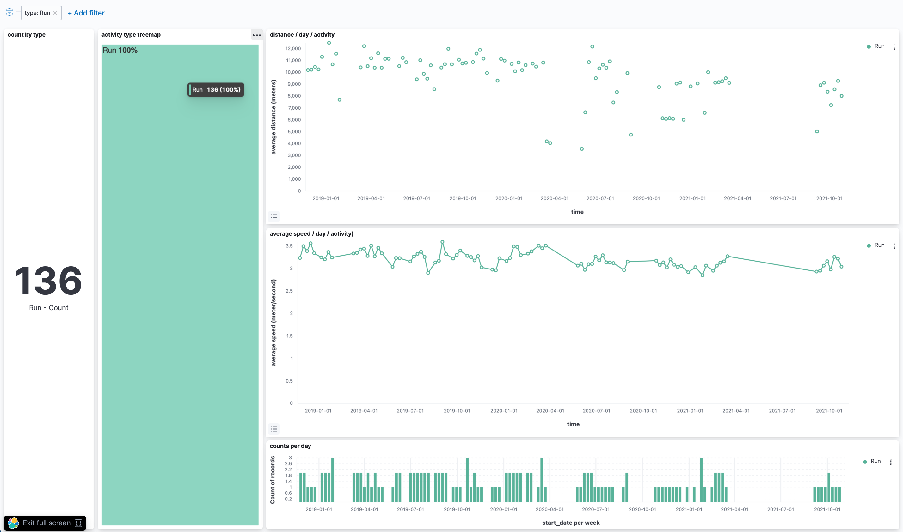

Public présumé : personnes intéressées par l’exploration de données.
Cet article fait suite à ce premier article pour la mise en place de Kibana et l'import des données Strava.
Franck, un collègue qui connaît bien Kibana, m'a conseillé d'essayer un graphique de type "vertical bar" avec un opérateur "count". J'ai notamment voulu essayer ce type de graphique, tout en en testant d'autres, en créant un "dashboard" plus complet que celui détaillé dans mon premier article.
J'ai créé avec les graphiques suivants :
-
"histogramme de la vitesse moyenne", en utilisant un graphique
Vertical bar: Y-axis "average(average_speed)", X-axis "@timestamp" and Split series on "type". -
"compteurs d'activités par type", en utilisant un graphique de type
Metricavec Aggregation "Count" and Split group sur "type". -
"histogramme de la distance parcourue", en utilisant un graphique de type
Vertical bar: Y-axis "average(distance)", X-axis "@timestamp" et split series sur "type". -
"tree map du nombre d'activité par type", en utilisant un graphique de type
Treemapchart avec Group by "type. -
"compteurs d'activités par jour" en utilisant un graphique de type
Bar verticalavec horizontal axis sur "start_date", vertical axis sur "Count of records" et break down by "top values of type".
Et voila le dashboard final : 🎉

.Le même dashboard après avoir cliqué sur le type d'activité "Run" (course à pied) :

.Le dashboard et ses graphiques peuvent être importés via le bouton en haut à gauche (avec trois traits horizontaux) / "Management" / "Stack Management" / "Saved Objects" / "Import" avec ce fichier d'import du dashboard.